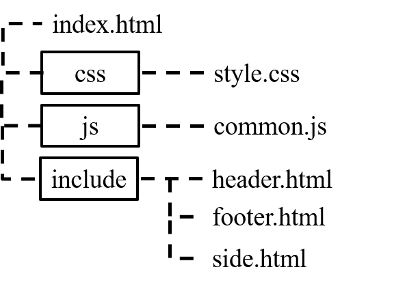

ウェブサイトの共通部分を『load』を使用してまとめる方法(1/2)

『HTML』や『CSS』等でウェブサイトを自作する時に，ヘッダーやフッターなどの共通部分を『load』を使用してまとめる方法を教えます。
目次
1.なぜまとめる必要があるのか
ウェブサイトを『HTML』や『CSS』や『JavaScript』でつくっている場合，『ヘッダー』，『フッター』，『サイド』などのような共通部分があります。これを1つのページごとに記入していると，変更したい時に全てのページを変更しなければなりません。10ページ程度の小規模なサイトであればそんなに手間はかかりませんが， 1000ページ以上の大規模なサイトの場合何日も掛かってしまい非常に手間がかかります。これを避けるために共通部分を１つのページにまとめるのが賢明なのです。
2.ファイル，フォルダの構成
次に，ファイル，フォルダの構成についてです。『index.html』と同じ階層に『js』フォルダをつくり，『common.js』というJavaScriptファイルをつくります。また『include』フォルダに共通部分である ヘッダー『header.html』，フッター『footer.html』，サイド『side.html』をそれぞれつくります。

3.『HTML』の『index.html』の内容
トップページの『index.html』で説明しますが，他のページでもやることは同じです。
まず，<head>内に
<!--jQuery-->
<script src="https://ajax.googleapis.com/ajax/libs/jquery/1.12.4/jquery.min.js"></script>
<script src="js/common.js" type="text/javascript"></script>を記入します。1つ目の記述は『jQuery』を使うために必ず必要で，『CDN』での『jQuery』を使います。『CDN』とは『jQueryファイル』を自分のサーバーにダウンロードして利用しなくても『jQuery』を保持している世界中のサーバーと通信して『jQuery』を使えるようにする手法です。メリットとしては『jQuery』のファイル容量を削減でき表示速度向上に繋がります。2つ目の記述は 『common.js』がある相対パスを書き，それが『JavaScript』であることを示します。注意点があって，相対パスについてトップページはこの書き方でいいですが，ファイル構成で階層が違うページだと『../』を書く必要があるので気をつけてください。
次に，<body>内に書く内容です。とても簡単です。ヘッダーの場合，
<div id="header"></div>を"<body>直後に記述します。『header』と名前をつけます。注意点としては，<div>と</div>の中に記述しても表示されません。例えば，
<div id="header">あいうえお</div>としても
<div id="header"></div>と同じ表示になります。
サイドやフッターなども同様に，
<div id="side"></div><div id="footer"></div>と記述します。サイドは</main>の直後でフッターは</body>の直前に記述します。